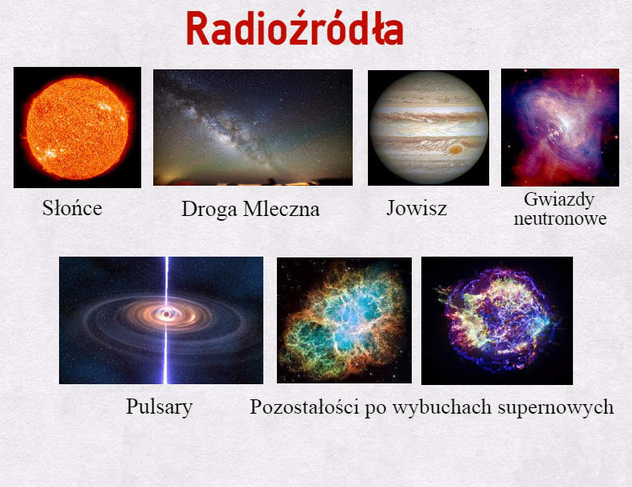
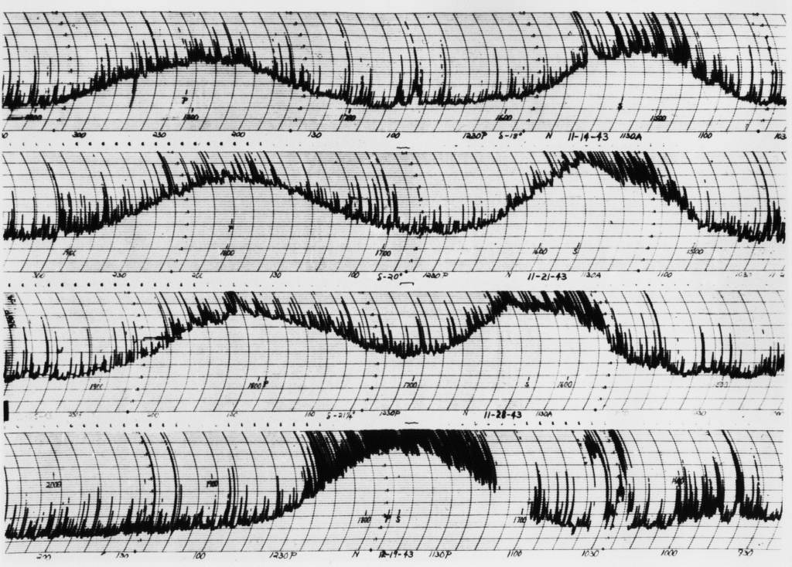
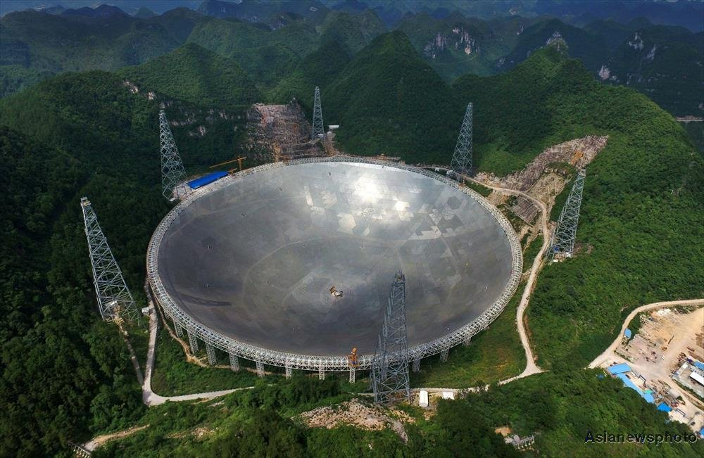
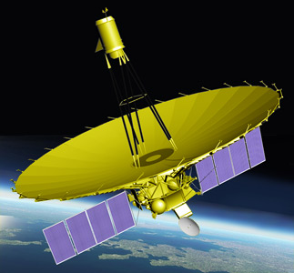

Kolejną formą obserwacji jest radioastronomia. Zajmuje się ona badaniem Kosmosu z zakresu fal od poniżej 1 mm do setek metrów. Na wykresie przepuszczalności atmosfery, możemy zauważyć, że w zakresie radiowym mamy dość duże “okno na Wszechświat”. Jednak są również długości fal, których odczyt jest niemożliwy.
A w zakresie tych fal jest co obserwować! Źródłami promieniowania radiowego są niemal wszystkie obiekty astronomiczne. Najważniejsze radioźródła to:

Słońce; Droga Mleczna; Jowisz, który ma rozbudowaną magnetosferę
gaz międzygwiazdowy
gwiazdy neutronowe (pulsary)
pozostałości po wybuchach supernowych, np. Cassiopeia A, która z naszej perspektywy jest najsilniejszym obiektem emitującym fale radiowe (nie licząc ciał Układu Słonecznego) oraz Mgławica Kraba
galaktyki (szczególnie galaktyki aktywne, w tym radiogalaktyki, kwazary i blazary)
tło kosmiczne
W celu obserwacji tych obiektów astronomowie zaczęli budować radioteleskopy. W 1937 roku Grote Reber skonstruował pierwszy radioteleskop, który po raz pierwszy umożliwił pierwsze obserwacje Kosmosu w zakresie innym niż światło widzialne.

Na wykresie obok widzimy wyniki obserwacji uzyskane z tego właśnie teleskopy w 1943 roku. Postrzępienia i grzebienie wynikają z interferencji z isrkami samochodów. Większe pagórki są związane z oddziaływaniem Drogi Mlecznej i Słońca.
Największym na dzień dzisiejszy jednoczaszowym radioteleskopem jest Five hundred meter Aperture Spherical Telescope w Pingtang (FAST) , w chińskiej prowincji Kuejczou. Teleskop ten wykorzystuje naturalne zagłębienie terenu, co jest standardową praktyką przy budowie wielkich radioteleskopów. Pojedyncza średnica jego czaszy to 500 metrów (składa się z 4450 trójkątnych paneli wykonanych z aluminium), a koszt budowy urządzenia wyniósł 180 milionów dolarów. W celu uzyskania ciszy radiowej w promieniu 5 km, przesiedlono 10 000 ludzi zamieszkujących okolice teleskopu.

Największy radioteleskop na świecie - FAST
W latach 1963-2016 największym radioteleskopem świata był ten z Arecibo, który znajduje się na należącej do Stanów Zjednoczonej wyspie Portoryko. Średnica tego urządzenia wynosi 305 metrów. Dzięki badaniom tego urządzenia dowiedzieliśmy się m.in. że obrót Merkurego wokół własnej osi jest w rzeczywistości o 29 dni dłuższy niż wcześniej sądzono; potwierdziliśmy istnienie gwiazd neutronowych; odkryto pierwszy podwójny układ pulsarów, co potwierdziło teorię względności. Ponadto dzięki temu urządzeniu w 1990 roku Polak - Aleksander Wolszczan odkrył pierwszą znaną ludzkości planetę pozasłoneczną.

Jedynym kosmicznym teleskopem radiowym jest rosyjski Radioastron, który został wyniesiony na orbitę okołoziemską 18 lipca 2011 roku. Tak niska liczba kosmicznych radioteleskopów jest spowodowana nieznacznym wpływem atmosfery ziemskiej na obserwacje w zakresie fal radiowych - obserwacje możliwe są również z terenu Polski - największy radioteleskop w Polsce znajduje się w Piwnicach pod Toruniem i ma 32 metry średnicy.
Warto wspomnieć, że w badaniu radioastronomicznym możliwe jest wykorzystanie interferencji fal. Sygnały fal odbieranych przez co najmniej dwa radioteleskopy, są doprowadzane do wspólnego odbiornika. Instrumenty takie nazywamy interferometrami astronomicznymi. Największym i najbardziej znanym jest ALMA - Atacama Large Millimeter/submillimeter Array. Znajduje się na płaskowyżu Chajnantor w Chilijskich Andach na wysokości ponad 5000 metrów n.p.m. Jest to miejsce, gdzie atmosfera jest bardzo sucha. Ludzie przebywający na takiej wysokości muszą nosić maski tlenowe.
Innym znanym radioteleskopem, który wykorzystuje interferencję fal radiowych jest LOFAR, który jest wieloantenowym teleksopem, którego urządzenia znajdują się na terenie całej Europy, także w Polsce.